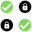

<p-menubar>
    <ng-template pTemplate="start">
        <div class="header">
            
            <div>Fil-Auth</div>
        </div>
    </ng-template>
    <ng-template pTemplate="end">
        <button pButton type="button" class="p-button-rounded p-button-outlined" icon="pi pi-user" pTooltip="Connected" tooltipPosition="left"></button>
    </ng-template>
</p-menubar>